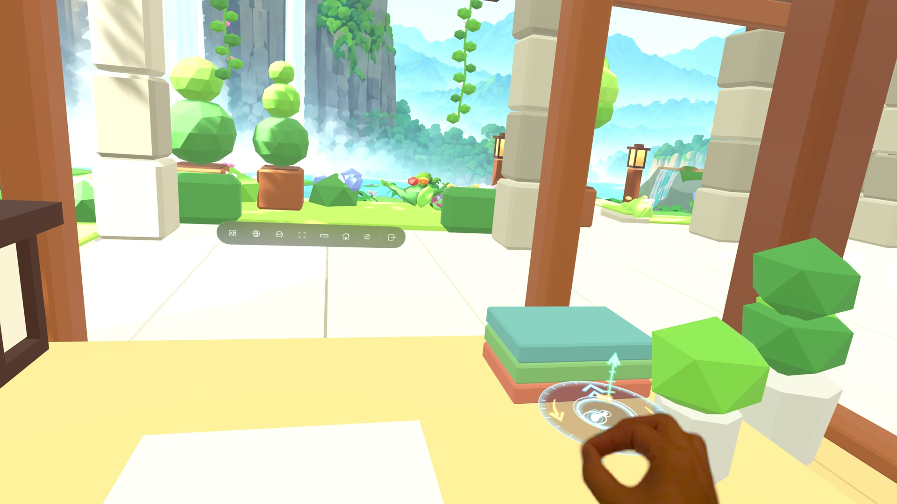

Move with Glide.
Pinch to explore your Room, turn, and change height. Use the hand compass to guide your movement.

Get ready
Enter a Room in Virtual Space and sit upright. Glide is on by default. To check it, open Settings → All Settings → Workspace and find Glide.
If you use Recline, reset it to an upright view before gliding.
Pinch and move
- Look at open space in the Room or View, beyond your app windows and the bottom toolbar.
- Pinch to reveal the hand compass. Keep pinching and move your hand forward or back to travel, up or down to change height, or left and right to turn.
- Release the pinch to stop.
Pinching at a window, panel, or toolbar operates that control. Look at open space to use Glide.
Read the hand compass
The center marker follows your hand. The forward/back guide, vertical guide, and curved turn guides show the available directions.

Bring back the toolbar
Keep pinching and hold your hand still. The ring fills, then the toolbar appears so you can open your controls again.
Glide settings
Open Settings → All Settings → Workspace, then scroll down to Glide. Choose Glide Guide to replay the quick guide.

| Setting | What it does |
|---|---|
| Glide | Turn Glide on or off. |
| Presentation | Vignette darkens the edges during movement. Vignette + Cabin also adds a cabin frame. None keeps the full view visible. |
| Speed | Choose Slow, Medium, or Fast. Speed also affects the distance of stepped moves and the rate of smooth turns. |
| Forward & Back | Choose Smooth for continuous movement or Stepped for short hops. |
| Up & Down | Choose Smooth for continuous movement or Stepped for short hops. |
| Turn | Choose Smooth for continuous turning or Stepped for turns in fixed increments. |
| Turn interval | When Turn is Stepped, adjust the time between turns. A longer interval leaves more time between steps. |
| Allow Outside Move | Allow Glide without opening Move. If this is off, open the Move panel before gliding. |
The defaults use Slow speed, Vignette + Cabin, Smooth forward/back and vertical movement, and Stepped turns. Each direction can be adjusted separately.
If motion feels uncomfortable, release the pinch to stop. Try Stepped movement or turn Glide off.